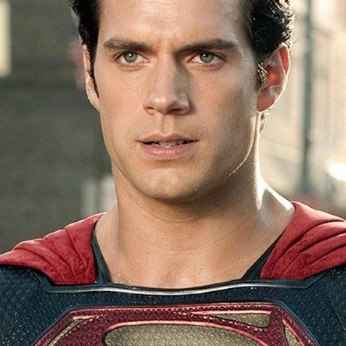

Batman (conocido inicialmente como Bat-Man) es un personaje creado por
los estadounidenses Bob Kane y Bill Finger, y propiedad de DC Comics.
Apareció por primera vez en la historia titulada «El caso del
sindicato químico» de la revista Detective Comics N.º 27, lanzada por
la editorial National Publications el 30/3/1939.
MUJER MARAVILLA
Es una superheroína creada por William Marston para la editorial DC
Comics. Es una princesa guerrera de las Amazonas, pueblo ficticio
basado en el de las amazonas de la mitología griega. En su tierra
natal es conocida como la princesa Diana de Temiscira pero fuera de
esta utiliza la identidad secreta de Diana Prince.

SUPERMAN
Es un superhéroe que apareció por primera vez en los ómics
estadounidenses publicados por DC Comics. El personaje fue creado
por el escritor estadounidense Jerry Siegel y el artista canadiense
Joe Shuster en 1933 cuando ambos se encontraban viviendo en Cleveland,
Ohio.
Harley Quinn
Harley Quinn es un personaje ficticio creado por los estadounidenses
Paul Dini y Bruce Timm para la editorial DC Comics. Quinn hizo su
debut en el vigésimo-segundo episodio de Batman: la serie animada, «El
favor del Joker», en septiembre de 1992 y se convirtió en una villana
recurrente en la serie.